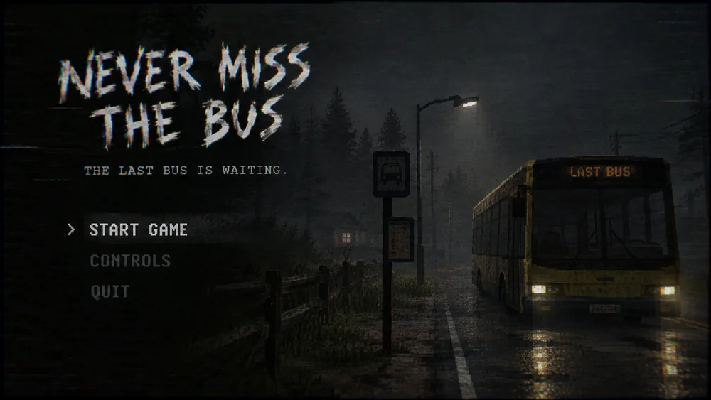
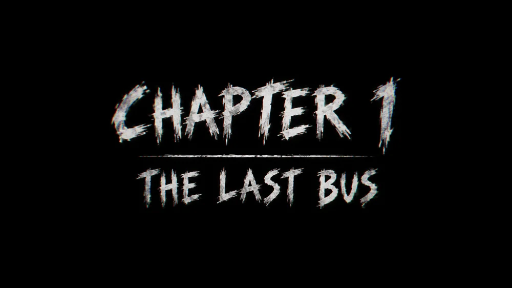
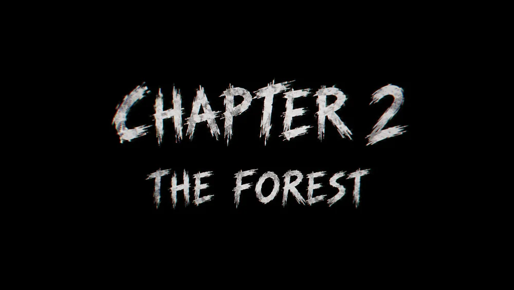

Never Miss the Bus
A first-person horror game about three friends who catch the last bus home. They wake up after a crash and find the driver missing. The game combines a 3D setting with pixel-art characters.
- Engine
- Unity 6 (6000.0.51f1)
- Language
- C#
- Development period
- 7 Jul 2026 – 20 Nov 2026
- Development span
- About 4½ months so far
In development. The dates show my first and latest recorded commits.
How it plays
The story opens at school, follows the friends onto the last bus and puts the player in control after a crash. Explore in first person, interact with nearby objects and follow clues through the village and forest. The 2D character sprites sit inside a 3D world.
Images






Gameplay clips
C# examples
Bus seat interaction
You can use a seat when it is free and your character is close enough.
public bool CanUse(Transform player)
{
return !IsOccupied && player != null &&
Vector3.Distance(player.position, SitPoint.position) <= interactDistance;
}Saving story progress
The current story state is written to a small JSON file. The save returns a success flag so the game can tell whether progress was stored.
try
{
Directory.CreateDirectory(Application.persistentDataPath);
File.WriteAllText(ProgressPath, JsonUtility.ToJson(state, true));
return true;
}
catch (Exception error)
{
Debug.LogError("Cannot save game: " + error.Message);
return false;
}Loading mouse sensitivity
The game reads mouse sensitivity from a separate settings file. It uses a default if no settings are saved and clamps the stored value to the supported range.
if (!File.Exists(SettingsPath)) return fallback;
var settings = JsonUtility.FromJson<GameSettingsState>(File.ReadAllText(SettingsPath));
return settings != null && settings.version == 1
? Mathf.Clamp(settings.mouseSensitivity, .1f, 5) : fallback;